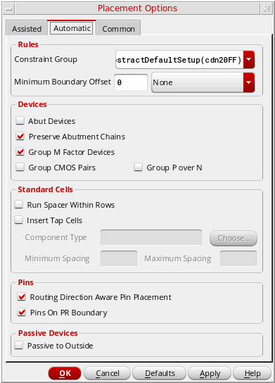

Setting Automatic Placement Options in the Placement Options Form
Before running the automatic placer, you must set the placement options on the Automatic tab of the Placement Options form. This tab includes options that are generic as well as those that are specific to the Custom Digital placement type.

To specify automatic placement settings:
- Open the Placement Options form by using one of the following methods:
- Click the Automatic tab.
- In the Rules section, select a Constraint Group that contains the spacing rules to be applied while running the automatic placer.
- Select Minimum Boundary Offset to specify that minimum spacing is required between the selected reference layer and the PR boundary.
- In the Devices section, select Abut Devices to create abutment chains in each row.
- Select Preserve Abutment to preserve existing abutment chains in the design.
- Select Group M Factor Devices to create a cluster containing all complementary MOS devices in the design that have a multiplication factor in the schematic.
- Select Group CMOS Pairs to group CMOS devices that share gate connections.
- Select Group P Over N to place all P-type devices at the top and N-type devices at the bottom of the selected region.
- In the Standard Cells section, select Run Spacer Within Rows to distribute standard cells evenly in the rows by adding or removing space between standard cells within each row.
- Specify tap cells parameters:
- In the Pins section, select Routing Direction Aware Pin Placement to let the placer consider the WSP direction while placing unconstrained pins.
- Select Pins on Boundary to place all pins along the boundary during placement.
- In the Passive Devices section, select Passive to Outside to push large capacitors and resistors to the edge of the PR boundary.
Related Topics
Setting the Assisted Placement Options in the Placement Options Form
Setting Common Options in the Placement Options Form
Return to top